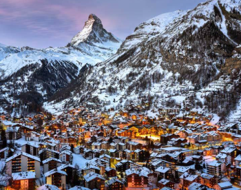
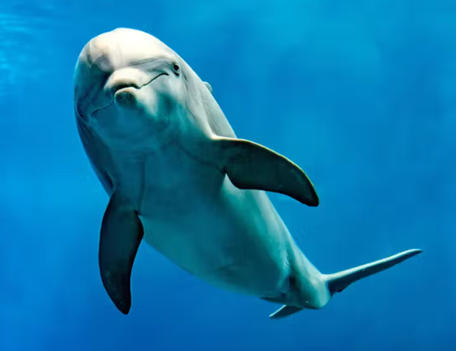
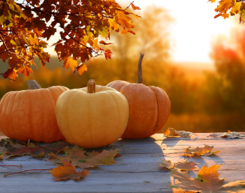

I am someone who loves to travel and explore the world. I have been to North America, Europe, Asia, and Africa. This includes 12 US states and 10 countries. Some of my favorite vacations include ones to Italy, Switzerland, and Hawaii. I also enjoy exploring the unique cuisines of the places I visit such as the cheese fondue I tried in Switzerland and the Gelato I had in Italy. Furthermore, I am eager to learn more about the history of the places I visit and I definitely learned a lot through my to Egypt where I observed ancient hieroglyphics and mesmerizing monuments. Overall, I enjoy traveling and learning about new places and cultures.
My favorite animal is a dolphin due to their playful nature and their witty behavior. There are 49 dolphin species yet my favorite is the Orca. I can remember going whale watching and being surrounded by a pod of over 100 dolphins as they swam around our boat and this experience was mesmerizing. I also enjoy the dolphins show at Sea World as one can see how smart these dolphins truly are.Found in almost all parts of the world, these marine mammals definitely attract a lot of attention wherever they are!
My favorite time of the year is the fall, usually from October to December. To begin, I enjoy seeing the deciduous trees with their red and orange leaves. Furthermore, I enjoy the pumpkin spice flavor in many dishes and drinks, especially pumpkin pie pumpkin pie. Additionally, fall features many holidays including Halloween and Thanksgiving Break. Moreover, I enjoy warm drinks like hot chocolate which you can find almost everywhere during the fall. Therefore, in my opinion, fall is the best season of the year.